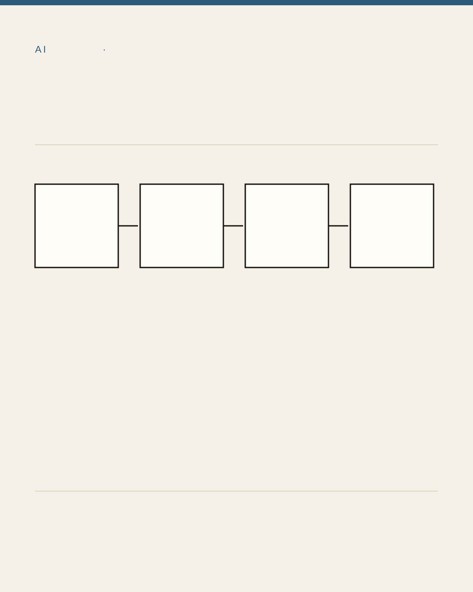

AI 学习 · 第 1 讲 · 拆开一次调用

你每天发出的 POST /v1/chat/completions，看起来只是把一段 JSON 发出去再收回来，但中间其实分好几段：网关先验身份和额度，再把 messages 拼成一段线性文本，分词器把它切成 token，模型按 token 一个个预测下一个，最后才被还原成 JSON 或流式片段。流式不是模型变快了，而是把同一段生成过程边产边发。理解了这条链路，你就能对上请求头、请求体、返回体里每个键到底谁在用，也能解释为什么输出会飘、会忘事、会变慢。
先说你看到的现象。你写一个 POST 请求，带上 Authorization 头和一个 JSON 体，几百毫秒到几秒之后，要么拿到一个带 choices 的 JSON，要么拿到一串以 data: 开头的流式片段。整个过程对你来说就是一次 HTTP 往返。但在这条往返的两端之间，至少有五六个环节在依次接手，任何一个环节出问题，你看到的报错位置都不一样。
大白话直觉是这样的：把这次调用想成寄一份手写工单。门口保安先查你的工牌和今天还能不能进，前台把你的工单按固定格式誊抄成一长条纸，抄写员把纸裁成一个个小方块，车间里的机器只能一块一块往下接，最后有人把接出来的方块重新粘成一句话，再按你要求的方式一次性交给你或者边接边递给你。你写的 JSON 只是工单，不是机器直接吃的东西。
底层机制拆开看。第一步是网关，它读 Authorization 头，确认这把 key 属于哪个账号、还有没有余额、这个模型你有没有权限、当前有没有触发速率限制。这一步不碰模型，纯粹是查表和计数。所以 401、403、429 这类错误通常在几十毫秒内就返回，因为根本没有进入后面的计算。第二步是请求体解析，服务端把 messages 数组按顺序摊平，每条消息的角色和内容被拼成一段连续的文本，中间插入模型训练时见过的角色分隔标记。模型看到的不是数组，而是一段线性文本。
第三步是分词，也就是把这段文本切成 token（模型能处理的最小文本单位，大致对应一个词或半个词）。分词器有一张固定的词表，同一个字在不同上下文里可能被切成不同的块。第四步才是模型本体：它把 token 序列变成向量，逐层算注意力，最后输出下一个 token 的概率分布。第五步是解码，按某种采样策略从分布里挑一个 token，把它接回序列末尾，再重复第四步。生成是一个循环，每多一个字就多跑一次前向。
用伪代码说就是：
while 未结束:
logits = model(tokens)
next = sample(logits[-1])
tokens.append(next)
这段的意思是：模型每次只负责预测下一个 token，整段回答是被这个循环一个字一个字攒出来的。所以输出长度直接决定耗时和费用，也解释了为什么长回答总是慢。
第六步是封装。非流式请求会等循环结束，把整段 token 还原成文本，塞进 choices 里一次性返回。流式请求则每产出一小段就立刻发一个事件，用的就是 SSE（服务器推送事件，一种让服务器持续往同一个连接里写数据的文本协议），你看到的每个 data: 行就是一次推送。流式没有让模型变快，只是把同一段生成过程边产边发。首字延迟取决于第一次前向什么时候算完，总时长基本不变。
现在把机制挂到你自己写的那段代码上。请求头里的 Authorization 对应第一步网关鉴权，它决定了你拿到的是 401 还是正常响应。请求体里的 model 字段决定网关路由到哪个模型、按哪张价目表计费。messages 对应第二步的拼文本和第三步的分词，你写的 system 消息只是排在最前面的那段文本，它没有独立通道，权重来自位置靠前和训练时形成的习惯，所以它并不是硬约束。stream 字段对应第六步的封装方式，true 就走 SSE，false 就等全量。返回体里的 usage 是分词和生成环节的计数，choices 里的内容是解码循环的产物，finish_reason 告诉你循环是自然结束还是撞到了长度上限。
和本周动态对一下。有一条动态说某个模型的用户在新定价补丁之后更快撞到限额，来源是 The Decoder。这条正好说明本讲链路里的计费环节：限额是按 token 用量算的，而 token 用量由分词和生成循环共同决定，定价规则一改，同样的请求就会更早触顶。你在代码里看到的额度报错，源头往往在分词和长度这一层，而不是网络层。
边界与不确定性也要说清楚。不同服务商在网关层做的检查顺序不完全一样，有的先查额度再查权限，有的反过来，所以同样的错误配置可能返回不同的状态码。messages 的拼接模板属于各家实现细节，通常不公开，因此 system prompt 的实际影响强度取决于具体模型和模板，不能一概而论。流式的分片粒度也不固定，一个 data 行里可能是一个字，也可能是几个 token。
收束一句：现在你能解释，为什么一次调用里有的错误几十毫秒就回来，有的要等好几秒，以及你请求体里每个键分别是在哪一步被谁用掉的。